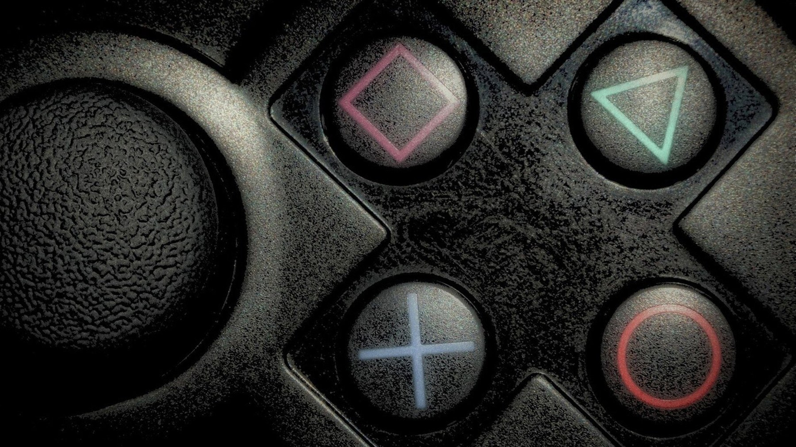
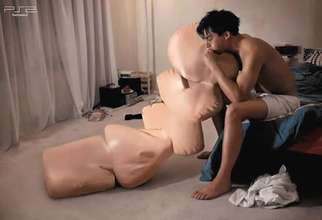
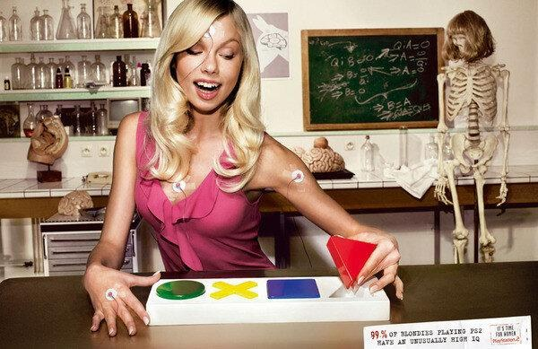
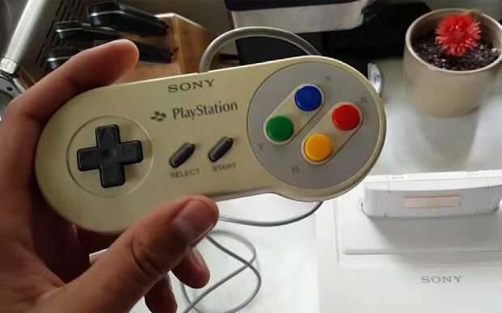
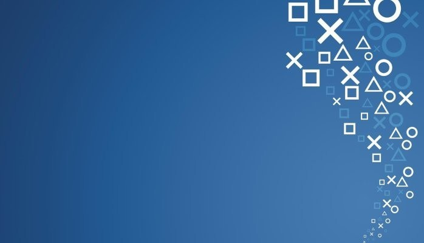

One of the best examples of how a unique feature can be used to sell a brand, the "Square, Circle, Cross and Triangle", have gone from simple icons on the face of a controller to one of the core elements of the PlayStation brand; almost as important to Sony as the PlayStation name itself.

The design of the interface of the controller is both challenging and incredibly important. For one, it has to be clearly visible and memorable, even at a glance. Much like road-signs, but printed on a much much smaller scale. They also have to be easy to remember, and describe. Imagine reading out a cheat code, if the buttons were called "Sigma, Alpha, Gamma, Phi". Wait, Which one is Phi again? Pure colors were out of the question too, as you wouldn’t want to exclude the colorblind among us. All of this gets even more complex, when you realize that the same icons have to be rendered on-screen. A complex icon will become a few random pixels of a CRT television. Even today, the legibility of text in video-games is a huge, game-breaking problem.
At the time, most console makers used letters, numbers or alphabets, usually combined with colors to differentiate the buttons. The trend continues to today, with Microsoft and Nintendo. But over at Sony, Teiyu Goto, the designer of the PlayStation controller had different ideas. He wanted something unique, and easy to remember. Here's his take:
“Other game companies at the time assigned alphabet letters or colors to the buttons. We wanted something simple to remember, which is why we went with icons or symbols, and I came up with the triangle-circle-X-square combination immediately afterward. I gave each symbol a meaning and a color. The triangle refers to viewpoint; I had it represent one’s head or direction and made it green. Square refers to a piece of paper; I had it represent menus or documents and made it pink. The circle and X represent ‘yes’ or ‘no’ decision-making and I made them red and blue respectively. People thought those colors were mixed up, and I had to reinforce to management that that’s what I wanted. When you think of the Madonna in painting, most people come up with the same image of the same woman in their minds. In a similar way, the combination of those simple symbols has come to represent both the PlayStation and the fun of video games, and being able to communicate that is a great thing.”
Before long, those four small symbols had become representative of the PlayStation, and were soon implemented into the branding, packaging and marketing materials for the PlayStation.


The logic is simple. While the design of the console, and the form factor are important, it is secondary to the experience of actually playing a game. The controller, the gameplay, and the graphics are the primary modes of interaction, and so are far more visible, and important than the console itself. Hence ads without any actual PlayStations. I just wish more smartphone manufacturers would learn from this example.
An interesting fact: The North American model of the PlayStation controller is roughly 10% larger than the Japanese model, to account for the fact the average person in the region has significantly larger hands than the average Japanese person.
Before Sony and Nintendo battled each other in the console wars, they actually worked together. It all started when Ken Kutaragi became interested in video games after watching his daughter play on a Nintendo Famicom (NES). As Sony was uninterested in the video-game business at the time, he worked in secret, and with the support of Sony executive Norio Ohga, he developed the Sony SPC 700, the sound chip for the Nintendo SNES. The project’s success led to a contract between Nintendo and Sony in 1988, for the development of a CD add-on, and a Sony-branded console that would play SNES and SNES-CD games.
There were conflicts between the two parties over who would control the licensing, with Sony pushing for a larger share of control over the software and format. Nintendo looked for other options, and sent their executives to Europe. At the 1991 Consumer Electronics Expo, Sony unveiled their SNES-CD consoles, titled "Play-Station". The next day however, Nintendo announced their partnership with Philips, effectively killing Sony’s SNES console.
This incident gave us this anomaly:

Sony’s Walkman, Discman, Handy-cam, Cyber-shot, and Trinitron were all great products, and all had their time in the sun, but four small icons ensure that PlayStation stays relevant and profitable.
You can read more about the origins of the PlayStation here, the original PlayStation Controller here, view more PlayStation ads, or read the whole interview with Teiyu Goto.
